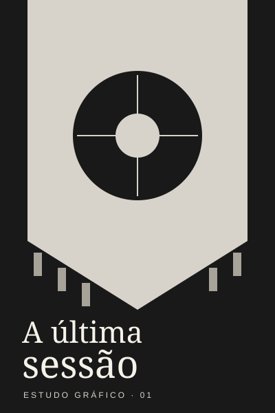

Atlas / ponto de partida
Siga uma pista.
Um nome no elenco. Um lugar na sinopse. Seu próximo filme pode começar por pouco.
Filmes em perspectiva
Todos os gêneros2024–2026Nota da comunidade ↓
Amostra / ficha de filme / 0001
A última sessão
Drama sobre os lugares que a gente não deixa para trás.
- Ano
- 2026
- Duração
- 108 min
- Nota
- 8,2 / 10
- Direção fictícia
- Clara Nunes
Lia encontra cartas antigas na cabine do cinema que herdou. Antes de fechar as portas, decide procurar quem ainda tem algo a dizer.
O trailer ainda não começou.
Na aplicação, o clique carrega youtube-nocookie. Neste arquivo não há vídeo nem conexão externa.